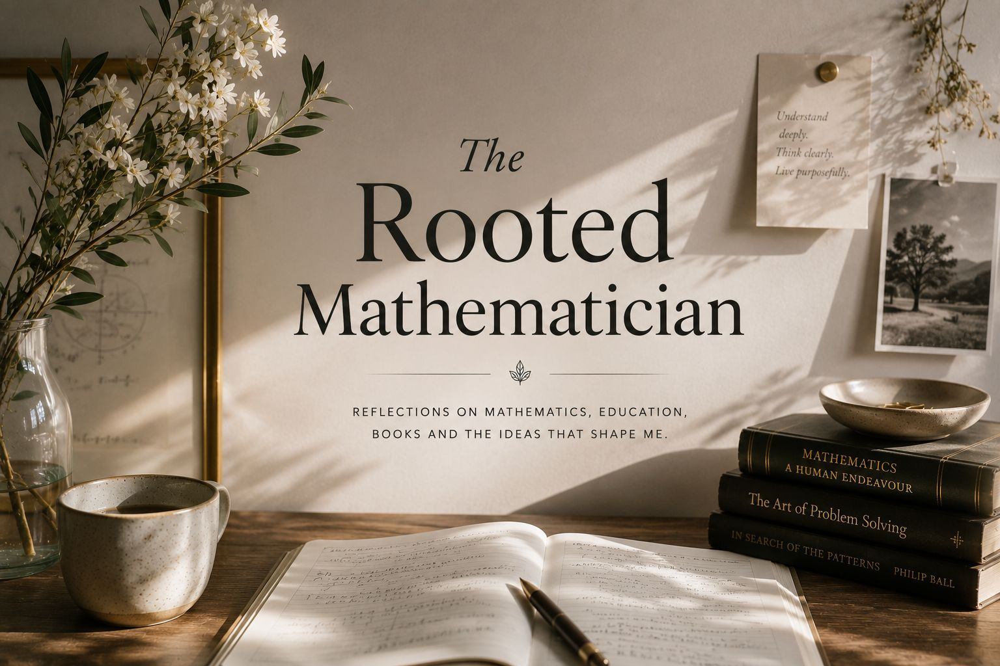

Some essays begin with a theorem. Others with a sentence, a book or a question that refuses to let me go. They are for readers who enjoy ideas that stay with them.
We keep no open mailing list. The Rooted Mathematician arrives by email with any title from the Reading Room, with an application, or with a place on the waitlist. However you come to it, we are glad you are here.